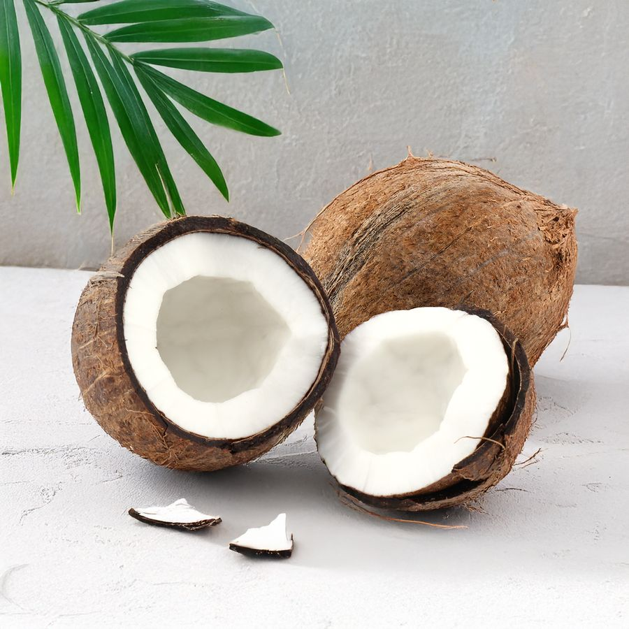

Учусь во МЦК-КТИТС на втором курсе. Сейчас моя главная цель — получить качественное образование, поэтому много времени посвящаю учебе. Стараюсь не отставать.
Тем не менее, я верю, что настоящая жизнь — это еще и верные друзья. Очень надеюсь, что знакомства, начавшиеся здесь, перерастут в крепкую дружбу и останутся со мной даже после окончания техникума.
Я твердо верю, что наша группа — это одна команда. Даже если наши цели и увлечения после пар различаются, здесь и сейчас мы движемся к одному — к получению знаний и диплома.
Поэтому я всегда готова поделиться конспектами, помочь разобраться в сложной теме, но не на самом экзамене. Для меня важно, чтобы мы чувствовали поддержку друг друга, а не боялись спрашивать.
Название сайта «Божья помощь» и девиз «На бога надейся, а сам код пиши» родились из моего личного опыта в программировании. Бывает, пишешь код, не до конца понимая, как же всё это сработает, но веришь, что в итоге — заработает! И ведь работает, вот чудо! Это я и называю «писать с Божьей помощью».
Мне очень близка история про разработчиков Team Fortress 2, они однажды зачем-то добавила в код своей игры фотографию кокоса. В будущем на их место пришли другие разработчики и решили убрать этот бесполезный кокос, но без него игра перестала работать.

Этот кокос — прекрасная метафора для той магии, которую порой не объяснить чистой логикой. Каждая строчка кода, даже самая странная, может быть тем самым «кокосом», держащим на себе всю систему. Как бы фанатично это ни звучало, я просто верю, что в программировании, как и в жизни, всегда есть место для чуда, которое помогает там, где заканчиваются наши знания.